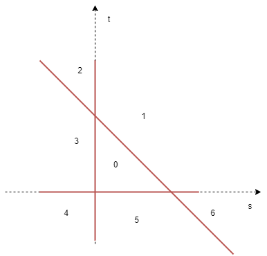

When we scan a rigid object, we should have multiple scans from different positions and angles. However, if we don't match/align these scans, they are just multiple partial scans. Therefore, we need some way to register these points, i.e. find a spatial transformation that maps one scan to the alignment of the other.
Another possible case is that we can have a coarse scan of a person and a finer scan of the face. We need to register the face.
We start with a complete scan of the surface $Y$ and a new partial scan of the surface $X$, both of them are which triangle meshes, they may not have the same number of vertices or even the same topology.
To measure the performance of the matching, we need a single scalar number, i.e. distance.
We can start with point to point Euclidean distance, for points $x, y$, let $$d(x,y) = \|x-y\|_2$$
Then, consider the distance between a point $x$ and some large object $Y$, let $$d(x,Y) = \inf_{y\in Y} d(x, y)$$
Let the directed Hausdorff distance be
$$D_{\vec H}(X, Y) = \sup_{x\in X}\|x-P_Y(x)\|$$
where $P_Y(x)$ is the closest-point projection from $x$ to $Y$.
Note that we use supremum, which means the worst projection is at most this distance.
Also, note that this distance is "directed", i.e. $D_{\vec H}(X,Y) \neq D_{\vec H}(Y, X)$.
Since we have the two triangle Meshes, we can approximate a lower bound on the Hausdorff distance by densely sampling surfaces $X$ as $\mathcal P_X$. Obviously, $$D_{\vec H}(X, Y) \geq D_{\vec H}(\mathcal P_x, Y)$$ And as we have more samples, it's more likely to approach the true distance.
However, note that the $\max$ function is not continuous, hence hard to optimize.
We want our random variable $x\in X$ to have a uniform density $f=A_X^{-1}$, where $A_X$ is the surface area of $X$. Therefore, we break the steps into randomly sample individual triangle, and then sample point from that triangle.
Let $h(T) = \frac{A_T}{A_x}$ be the uniform distribution over triangle index $T\in\{1,...,m\}$, $g_T(x) = A_T^{-1}$ be the uniform distribution over the triangle $T$, then
$$h(T)g_T(x) = \frac{A_T}{A_X}\frac1{A_T} = A_X^{-1} = f(x)$$
Let $v_1,v_2, v_3$ be the corners of the triangle, first pick a point uniformly in the parallelogram form by reflecting $v_1$ across the line $\overline{v_2v_3}$. Then, randomly sample $a_1, a_2 \in [0, 1]$ $$x = \begin{cases}v_1 + a_1(v_2-v_1) + a_2(v_3-v_1)&a_1+a_2 \leq 1\\v_1 + (1-a_1)(v_2-v_1) + (1-a_2)(v_3-v_1)&a_1+a_2 < 1\end{cases}$$ In case 2, we sampled a point in the reflection part of the triangle, hence we reflect it back by $1-a$
Let $\mathcal C_i = \sum^i_{j=1}\frac{A_j}{A_X}$ be the cumsum of the relative areas. Then we randomly sample $a\in [0, 1]$ and locate the index of $a$ in that cumsum interval.
To enable optimization, we replace the sup norm with the euclidean norm, i.e. $$D_{\vec C}(X, Y) = \sqrt{\int_{X}\|x-P_Y(x)\|^2 dA}$$ So that we can define the directed matching energy from $Z$ to $Y$ as $$E_\vec{C}(Z, Y) = [D_\vec{C}(Z,Y)]^2 = \int_{Z}\|z-P_Y(z)\|^2 dA = \int_Z \|f_Y(z)\|^2 dA$$ Consider the function $f_Y(z) = z - P_Y(z)$. if $P_Y(z)$ is a point, that $f(z) = z-y$ is linear, and if $Y = \{y\mid (y-p)\cdot n = 0\}$ is a infinite plane, then $f_Y(z) = ((z-p)\cdot n)n$ is also linear. However, due to "smallest" distance, the linearity does not hold and $f_Y$ may not even be continuous.
However, if we fix some $z_0$ s.t. $f(z) = z-P_Y(z_0)$, since $z_0$ is fixed, and $P_Y(z_0)$ is a point. the function can be optimized, takes one step further, we can do $f_Y(z) = ((z-P_Y(z_0))\cdot n)n$, which also can be optimized. Therefore, we can have an iterative algorithm
z_0 = initial guess
while not converge:
f = linearize f(z) around z_0
z_0 = minimize f(z)^2Go back to the original problem, our task is to find a rigid transformation $T$ $$T(x) = Rx + t$$ where $R\in SO(3)$ is the rotation matrix and $t\in\mathbb R^3$ is the translation vector, and our problem is to $$\arg\min_{t, R}\int_X \|Rx + t - P_Y(Rx + t)\|^2 dA$$ which, as we sampled points on $X$, is approximated as $$\arg\min_{t, R} \sum_{\mathcal P_x} \|Rx + t - P_Y(Rx + t)\|^2 $$
The procedure can be described as below
ICP(V_X F_X, V_Y, F_Y):
# init R, t, possibly as identity and zero vector
R = identity(3)
t = [0, 0, 0]
while not converge:
X_points = sample from V_X F_X
proj = project all X_points onto V_Y F_Y
R, t = update rigid transformation from best matched X_points and proj
V_X = R(V_X) + t
Then, we have to consider the methods fro the rigid transformation update. As from previous discussions, we can do point-to-point or point-to-plane.
We are trying to solve $$\arg\min_{R, t} \sum^k \|Rx_i + t - p_i\|^2$$ The energy is quadratic in $t$, so that the optimal $t^*$ can be obtained by (with unknown $R$) \begin{align*} \partial_t\|RX^T + t\vec 1^T - P^T\|_F^2 &= 0\\ \vec 1^T1t + RX^T\vec 1 - P^T\vec 1 &= 0\\ t&=\frac{P^T\vec 1 -RX^T\vec 1}{\vec 1^T\vec 1}\\ t &= \bar p - R\bar x \end{align*} where $X_{k\times 3}, P_{k\times 3}$ are $x_i, p_i$ stacked vertically, and $\vec 1_{k\times 1}$ is the vector filled with 1's. $\|\cdot\|_F$ is the Frebenius norm, which is the sum of squared elements. $\bar p = k^{-1}\sum^k p_i, \bar x = k^{-1}\sum^k x_i$ is the mean of all points.
Then, replace $t = \bar p - R\bar x$, the problem becomes \begin{align*} R^* &= \arg\min_{R} \sum^k \|Rx_i + (\bar p - R\bar x) - p_i\|^2\\ &= \arg\min_{R} \sum^k \|R(x_i-\bar x) - (p_i - \bar p)\|^2\\ &= \arg\min_{R} \| R\bar X^T - \bar P^T\|^2_F \end{align*} where $\bar X_{k\times 3}, \bar P_{k\times 3}$ are $x_i-\bar x, p_i - \bar p$ stacked vertically.
Then, \begin{align*} R^* &= \arg\min_{R} \| R\bar X^T - \bar P^T\|^2_F\\ &= \arg\min_{R} \|R\bar X^T\|_F^2 - 2\langle R\bar X^T, \bar P^T\rangle_F + \|\bar P^T\|^2_F\\ &= \arg\min_{R} \|\bar X^T\|_F^2 - 2\langle R\bar X^T, \bar P^T\rangle_F + \|\bar P^T\|^2_F &R\in SO(3)\Rightarrow R^TR = I\\ &= \arg\max_{R} \langle R\bar X^T, \bar P^T\rangle_F\\ &= \arg\max_{R} \langle R, \bar P^T\bar X\rangle_F &\text{permutation property of F-norm} \end{align*}
Using SVD, we can have $\bar P^T\bar X = U\Sigma V^T$, so that with permutation property of F-norm again $$R^* = \arg\max_R\langle R, U\Sigma V^T\rangle = \arg\max_R\langle U^TRV, \Sigma\rangle$$ Let $\Omega = U^TRV$ with $\det \Omega = \det UV^T$, since $U,V$ are orthonormal, $\Omega^T = \Omega^{-1}$. This implies that $R^* = U\Omega^*V^T$, where $$\Omega^* = \underset{{\Omega\in O(3), \det\Omega = \det UV^T}}{\arg\max} \langle \Omega, \Sigma\rangle_F$$ so that $\det R^* = 1$.
Because $\Omega$ is orthonormal, each col and row must have unit norm. Placing a non-zero on the off-diagonal will get "killed" when multiplied by the corresponding zero in $\Sigma$. So the optimal choice is to set all values 0, except the diagonal. The best choice is $$\Omega^* = \begin{bmatrix}1&0&0\\0&1&0\\0&0&\det UV^T\end{bmatrix}$$ so that $\det UV^T$ is multiplied with the smallest $\sigma$. finally the closest rotation matrix is obtained as $$R^* = U\Omega^*V^T$$
We are trying to solve $$\arg\min_{R, t} \sum^k \|(Rx_i + t - p_i)\cdot \hat n_i \hat n_i\|^2$$ where $\hat n_i$ is the unit normal at the located closest point $p_i$. The problem can be simplified a bit as $$\arg\min_{R, t} \sum^k ((Rx_i + t - p_i)\cdot \hat n_i)^2$$ To optimize $R$, we linearize the constraint that $R$ stays a rotation matrix and work with a reduced set of variables. Any rotation matrix can be written as scalar rotation angle $\theta$ around a rotation axis defined by a unit vector $\hat w$, generally, given the rotation axis, the axis-angle to matrix formula gives $$R_{\hat w}(\theta) = I + \sin\theta W + (1-\cos\theta)W^2$$ where $W$ is the skew symmetric cross product matrix $$Wx = \hat w\times x, W = \begin{bmatrix}0&-w_3&w_2\\w_3&0&-w_1\\-w_2&w_1&0\end{bmatrix}$$ In this form, we can linearize by considering a small change in $\theta$ and $\hat w$, as $$R\approx I + \theta W, Rx \approx x + \theta \hat w \times x$$ introducing $a = \theta \hat w$, the problem becomes $$\arg\min_{a,t} \sum^k ((x_i + a\times x_i + t - p_i)\cdot \hat n_i)^2$$ and let $u = \begin{bmatrix}a\\t\end{bmatrix}$, $$\arg\min_u \sum^k \big(\begin{bmatrix}(x_i\times \hat n_i)^T &\hat n_i^T\end{bmatrix}u - \hat n_i^T (p_i - x_i)\big)^2$$ Then, let $c_i = \begin{bmatrix}(x_i\times \hat n_i)^T &\hat n_i^T\end{bmatrix}, d_i = \hat n_i^T (p_i - x_i)$, the equation above is expanded as $$\arg\min_u \sum^k u^Tc_i^Tc_iu-2u^Tc_i^Td_i + d_i^Td_i = \arg\min_u \sum^k u^TAu-2u^Tb$$ where $A = \sum^k c_i^Tc_i, b = \sum^kc_i^Td_i$
Therefore, $[a^*, t^*] = u^* = A^{-1}b$, as we considering $A$ as a sum of $c_i$, which is convex and separable. Then, we have $a^* = \underset{\theta}{\|a^*\|}\underset{\hat w}{\frac{a^*}{\|a^*\|}}$, and we can find $$R^* = I + \sin\theta W^* + (1-\cos\theta) [W^*]^2$$
To uniform sampling a mesh $X$, the pdf will be $$f_X(x) = A_X^{-1}$$ we can then have two independent uniform random sampling, first, sample a triangle from $T=\{1,2,...,m\}$ of the mesh, which $h_i = \frac{A_i}{A_X}$ and then for each triangle, sample from $g_i(x) = A^{-1}_i$, so that $$f_X(x) = h(T)g_T(x) = \frac{A_T}{A_X}\frac{1}{A_T} = A_X^{-1}$$
Consider $g_T$, a triangle can be written as parametric function $T(s, t) = a + s(b-a) + t(c-a)$ where $0<s, t<1, s+t\leq1$. Also, note that if we release the constraint $s+t\leq1$, we get a parallelgram formed by reflecting $a$ across $\bar{bc}$. Therefore, we can randomly sample $s, t$ and if $s+t > 1$, we reflect it back by $1-s, 1-t$
Note that the cmf of $h$ is $$C(i) = \sum_{j=1}^i \frac{A_j}{A_X} \in (0, 1]$$ Therefore, we can randomly sample $x$ and find the first value of $C_i$ s.t. $C_i > x$
Given a query point $x\in\mathbb R$ and triangle $T\in \mathbb R^{3\times 3}$ with corners $a, b,c$. To find $p$ s.t. $$p=\arg\min_{p\in T}\|x-p\|$$.
Let $P$ be the plane that $T$ belongs to, we can simply define $P$ from $T$, but remove the constraints.
$$P(s,t):\mathbb R^2\rightarrow\mathbb R^3:= a + s(b-a) + t(c-a)$$
Let $q \in P$ be the point projected from $x$ to $P$. Then, $$\|x-p\| = \|(x-p) + (p-q)\|$$ Note that $x, q$ is fixed, so that we want to minimize $\|p-q\|$, note that $p,q$ both line on $P$, thus this problem becomes a 2D problem on the plane $P$.

Then, to solve the 2D problem. Note that the regions are divided by $s=0, t=0, s+t=1$, we can do it case by case.
An efficient implementation will try to reduce the number of divisions, so that the relative error is small. https://www.geometrictools.com/Documentation/DistancePoint3Triangle3.pdf